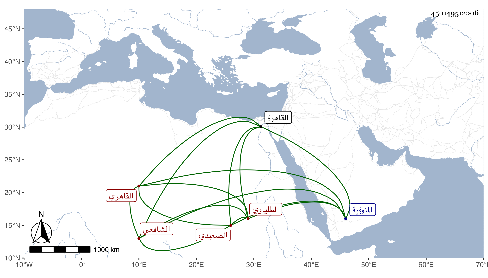

0902Sakhawi.DawLamic.ITO20230111-ara1.EIS1600.450149512006
Biography ID: 450149512006
232
عبد الرحمن بن سلام بن اسماعيل الصعيدي الأصل الطلياوي ثم القاهري الشافعي ويعرف بالبدوي . ولد بطليا من المنوفية وقدم القاهرة بعيد السبعين فجود القرآن على جماعة بل قرأ لأبن كثير واشتغل عند أخي وابن سولة وغيرهما في الفقه والعربية والكوراني والعلاء الحصني وصالح اليمني وغيرهم في النحو بل قرأ في الصرف والأصول والمنطق وغيرها كثيرا ولازم ابن قاسم وحسن الأعرج ثم انثنى عنهما وكذا أخذ عن الشمس البلبيسي الفرضي وعبد الحق وكنت ممن قرأ علي دروسا في التقريب وأقبل علي وعلى أخي ، وتنزل في المزهرية وقطنها بل أقرأ ولد ابن حجي وبني الواقف ، والغالب عليه الخير مع يبس وعدم الارتضاء بكثيرين .
